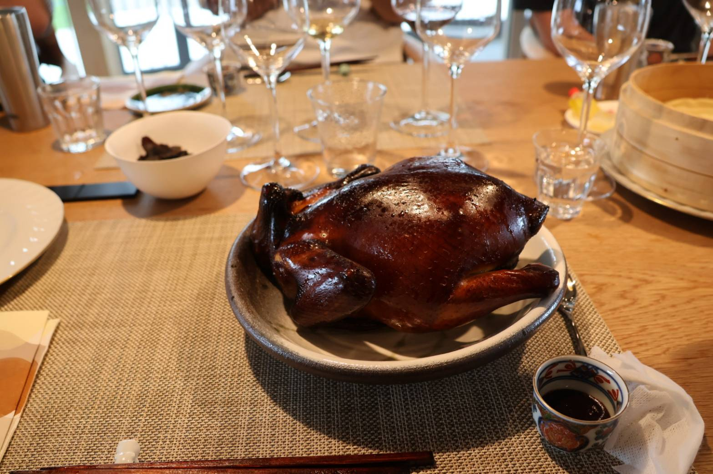
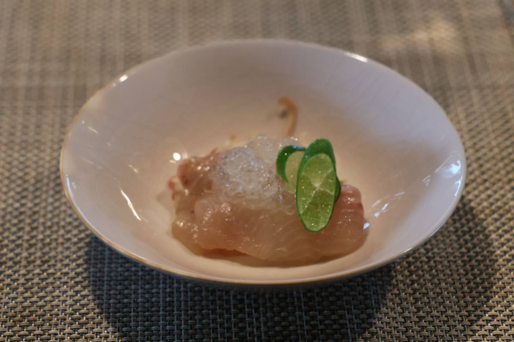
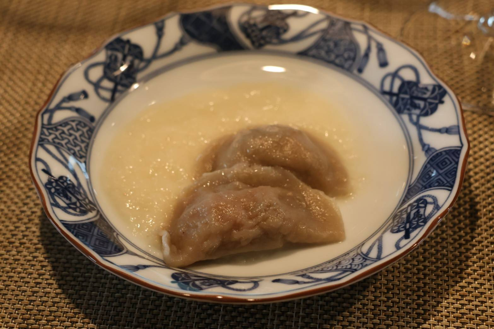
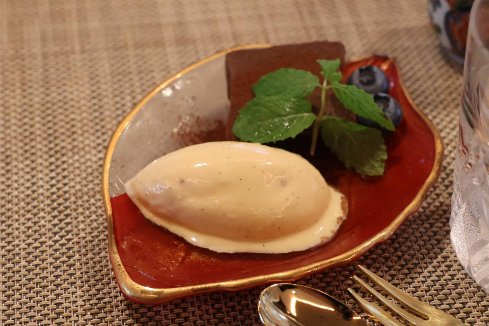
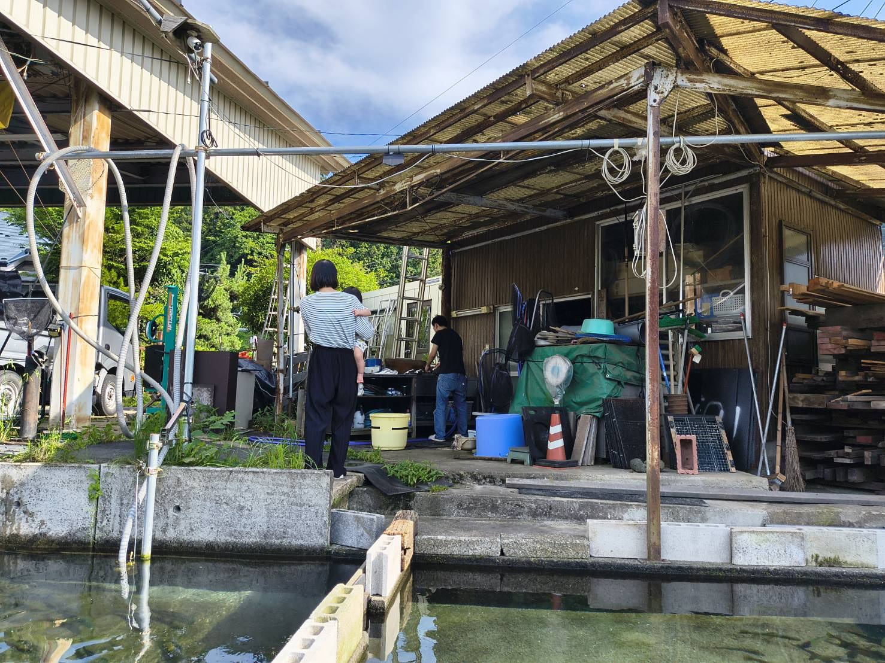

出張料理の宴：中華房 希彩 × ドメーヌ・スリエ
2026.07 / SHIOJIRI WINE & MODERN CHINESE LUNCH
同じ水源が育んだテロワールと、伝統文化へのアプローチ
地元の荒廃農地を再生させ、ワインに関わるすべての人を笑顔（スリエ）に。そんな熱い想いをもつ塩尻のワイナリー「ドメーヌ・スリエ」様と、中華房 希彩による特別な出張料理・コラボレーションランチが実現いたしました。
今回のペアリングの根底にあるのは、塩尻をはじめとする信州の豊かな「水」が育んだ者同士の共鳴。形成された塩尻のテロワールを表現するべく、長野県に深く根差す“鯉食”をはじめとした伝統的な食文化を、現代的な感性でモダン中華へと昇華させる私なりのアプローチです。この土地への敬意を詰め込んだ、至高のマリアージュの記録です。
特別なランチを彩ったマリアージュ・ストーリー

今日のために訪れた「田川浦養魚場」の美しい清流
田川浦養魚場 シナノユキマスのトマトジュレ
〜みょうが と フィンガーライムを添えて〜
本日の特別なランチの幕開けに、料理人自らが仕入れに赴いた「田川浦養魚場」の新鮮なシナノユキマスを使用した一皿。
トマトの旨味を美しく凝縮した透明なジュレを纏わせ、みょうがの爽やかな香りとフィンガーライムのプチプチとはじける上品な酸味をアクセントに。塩尻のぶどうを育む清らかな水と、ユキマスが泳ぐ美しき清流という“同じ水源”のつながりを感じさせる、涼やかで引き締まった味わいです。

THE DISH
透き通るような白身の美しさと、フィンガーライムのグリーンが映える盛り付け。繊細なワインの香りを邪魔しないよう、計算された調和を施しています。

4日間氷温熟成「塩尻 加藤の鯉」の細造り
じっくりと氷温熟成させ、ねっとりと旨味を濃縮させた地元・塩尻の「加藤の鯉」を使用。長野県の伝統的な鯉食文化を現代風にアレンジしたアプローチです。
特製葱油、濃厚な自家製芝麻醤、精度高く刻むフレッシュな青山椒という“3つの異なる香りのアプローチ”を施しました。ソーヴィニヨン・ブランが持つ煌めくボディと爽やかなハーブ感が、鯉の繊細な旨味と見事に共鳴し、爽快な幕開けを飾ります。

信州長芋のすり流しと野沢菜紹興酒漬けの水餃子
日本中国料理協会長野県支部のコンクールにて、金賞をいただいた料理を今回のワインに合わせてセルフオマージュした一皿。
皮には信州産の蕎麦粉と長芋を練り込み、水の代わりに蕎麦茶を使用。自家製の野沢菜紹興酒漬けと黒舞茸の餡を贅沢に包み込みました。長芋の優しいすり流しスープと、信州を代表するぶどう品種「龍眼」の高貴で繊細な風味が、これ以上ない地元の調和を見せます。

鯉の唐揚げ 熟成黒酢餡掛け 〜受け継がれる伝統〜
店主の修業先であり「信州の名工」を受賞された油家・村田宏和氏の伝統の味を、自らの仕立てで表現したオマージュ料理。鯉に細かく骨切りを施し、ビールの衣で外はカリッと、中はふっくらと揚げ上げました。
10月に収穫された「ピノ・グリ 遅摘み」が持つ、黒糖や杏を思わせる重厚で紹興酒のようなニュアンスに合わせ、中国黒酢（鎮江香酢）のまろやかなコクと中ザラメの深みをまとった特製餡が、熟成された鯉の旨味をとろけるように包み込みます。
辰野町ぎたろう軍鶏の中国茶燻製 スモークチキン 北京ダック風
力強い旨味を持つ信州の銘地鶏「辰野町ぎたろう軍鶏」が主役。丁寧に中国茶燻製を施した軍鶏を、皮目をバリッとジューシーに焼き上げ、丸嘉小坂漆器店様の美しい漆器「月ノ輪」に盛り付けました。
地元産のふじりんごの極細切り、信州味噌で作った自家製甜面醤に塩尻産ブルーベリーをじっくり練り上げた特製餡を、地粉を使って一枚ずつ手作りした蒸し立て熱々の烤鴨餅（カオヤーピン）で巻いて。「メルロ 120」のベリーの香りと完璧に響き合います。

岡崎おうはんのショコラテリーヌ ＆ 贅沢バニラアイス 紹興酒の香り
贅沢な余韻を締めくくるのは、信州のプレミアムな卵「岡崎おうはん」を贅沢に使用して焼き上げた濃厚なショコラテリーヌと、ジャックダニエルハニーを効かせたリッチなバニラアイス。
「ブラック・クイーン 甘口」が持つぶどう感たっぷりのやさしい甘さと酸味の絶妙な調和が、紹興酒が香るダークチョコのビターな味わい、そして贅沢なコクの卵の風味と完璧にとろけ合います。

※食材はすべて料理人が自ら生産者の元へ赴き、状態を見極めて最高の状態で仕込みを行っています。
出張料理・オーダーメイドコースのご相談
中華房 希彩では、店舗での営業のほか、ワイナリー様や各種イベント会場、特別な記念日のための「出張料理（ケータリング）」も承っております。お酒のラインナップやゲストの好みに合わせた、世界に一つだけの特別なコースを仕立てます。
ご予算や人数、機材環境など、どうぞお気軽に公式LINEやお電話にてご相談ください。